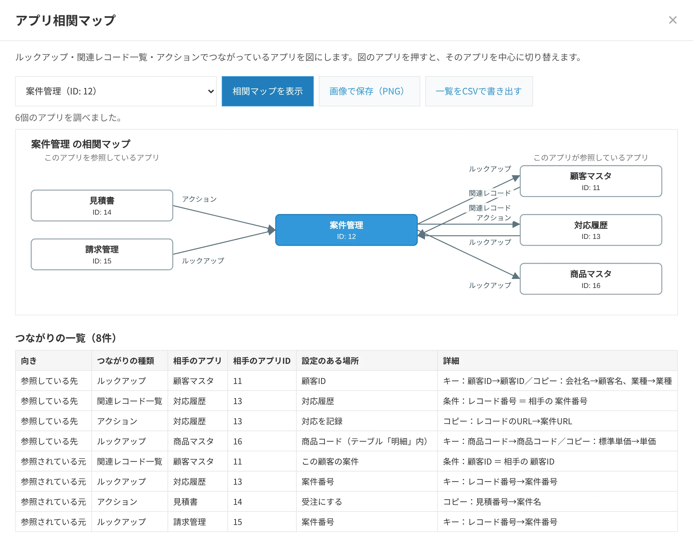

アプリ相関マップ
無料アプリのつながりを、図で確認。
ルックアップ・関連レコード一覧・アクションでつながるアプリを図にし、どのフィールドでつながるかも一覧にします。
- ずっと無料・人数制限なし
- 保存：PNG・Excel・CSV
- データは外部に送信しません
アプリのつながり
- ルックアップ
- 関連レコード一覧
- アクション
 つながりの図と一覧参照している側・されている側の両方。PNG・Excel・CSVで保存
つながりの図と一覧参照している側・されている側の両方。PNG・Excel・CSVで保存


こんなときに
- アプリを直す前に、影響するアプリと、どのフィールドでつながっているのかを確かめたい
- 引き継いだアプリが、ほかのどのアプリとつながっているのか分からない
- アプリを削除・統合する前に、そのアプリを使っているアプリを知りたい
できること
- 選んだアプリを中央に置き、左に「このアプリを参照しているアプリ」、右に「このアプリが参照しているアプリ」を表示
- 図の中のアプリを押すと、そのアプリを中心に表示し直す
- テーブルの中のルックアップや、同じアプリの中のルックアップも見つける
- 図はPNG、つながりの一覧はExcel（見出し行の固定・A4の印刷設定つき）かCSVで保存
使い方
- ボタンを押すアプリの一覧画面の上にある「相関マップ」を押します。
- アプリを選ぶ中心にするアプリを選んで「相関マップを表示」を押します。最初の1回は、全アプリを調べるため少し時間がかかります。
- 保存する「画像で保存（PNG）」で図を、「一覧をExcelで保存」でつながりの一覧を保存します。
導入方法
- 下の「ダウンロード」から、プラグインのファイル（zip）を保存します。zipは展開せず、そのまま使います。
- kintoneの歯車アイコンから「kintoneシステム管理」を開き、「プラグイン」の「読み込む」でファイルを読み込みます。
- どれか1つのアプリの「アプリの設定」→「プラグイン」で「台帳屋 アプリ相関マップ」を追加し、「アプリを更新」を押します。
- 一覧画面の上に「相関マップ」ボタンが出ます。1つのアプリに追加すれば、ほかのアプリを中心にした図も表示できます。
動作環境
| 対応コース | スタンダードコース・ワイドコース |
|---|---|
| 導入する人 | kintoneシステム管理者 |
| 利用する人 | アプリを閲覧できるユーザー（アクションのつながりを表示するには、そのアプリの管理権限が必要です） |
| 画面 | パソコン版の一覧画面（動作確認はGoogle Chrome） |
| 通信と書き込み | kintone環境とのみ通信し、設定やレコードは変更しません。図と一覧はブラウザの中で作成します（導入前の確認事項） |
ダウンロード
ダウンロード（v1.2.3・zip・22KB）
ファイルの確認用（SHA-256）：7cda14a7d27c19fa19393eedbe5c6bec2f6b11a6fe361dfb4b17bf12a3f7f60c
ご利用の前に利用規約をお読みください。
困ったときは
- 相手のアプリが「（不明）」と表示される場合は、参照先のアプリを閲覧する権限がありません。
- 「アクションを読めなかったアプリ」がある場合は、そのアプリの管理権限を持つユーザーが開くと、アクションも図に表示されます。
- 2回目からのアプリの切り替えでは、調べ直しは行いません。
- ゲストスペースのアプリには、現在対応していません。
- そのほかの不具合やご要望は、daichoya.plugins@gmail.com までお知らせください。
- 関連するガイド：kintoneでアプリの参照元を調べる方法
更新履歴
1.2.3（2026年11月6日）：ボタンの文字と、相関マップの中心のアプリの青を少し濃くして、読みやすくしました（画像で保存した図も同じ色です）。機能の変更はありません。
以前の更新
- 1.2.2（2026年11月6日）：画面の下のご案内の料金を、年額（33,000円から）にしました。機能の変更はありません。
- 1.2.1（2026年11月6日）：画面の下のご案内を「全アプリをまとめて点検するなら、有料の棚卸し・変更監視パック（件数だけなら無料）」と、無料と有料が分かる言い方にしました。機能の変更はありません。
- 1.2.0（2026年11月6日）：Excelの先頭に、結果のまとめの1文（つながっているアプリの数）を入れました。
- 1.1.0（2026年11月5日）：つながりの一覧を「Excelで保存」できるようにしました（資料の名前・kintoneの環境・作成日時入り、A4の印刷設定つき）。
- 1.0.3（2026年11月5日）：画面の下のご案内を、この環境のアプリの数と、全アプリを無料で点検できる「棚卸し・変更監視パック」へのご案内に変えました。機能の変更はありません。
- 1.0.2（2026年11月5日）：調べたのは、操作した人が見られるアプリだけであることを表示するようにしました。
- 1.0.1（2026年11月5日）：画面の下に、有料版（棚卸し・変更監視パック）のご案内を1行加えました。機能の変更はありません。
- 1.0.0（2026年11月5日）：最初の公開版